En la sección de sistema de módulos nativos CJS, se habló un poco de los módulos nativos, así que en esta sección estaremos viendo algunos de los módulos nativos más comunes en Node.js
os (Operating System)
El módulo os proporciona métodos para trabajar con información del sistema operativo, como el nombre del sistema operativo, la arquitectura del sistema, la información sobre la red, entre otros. Aquí hay un ejemplo simple de cómo puedes utilizar el módulo os en Node.js:
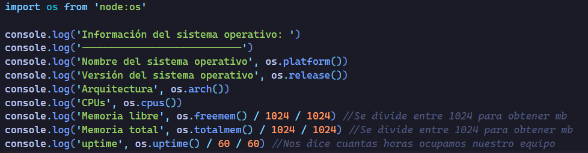
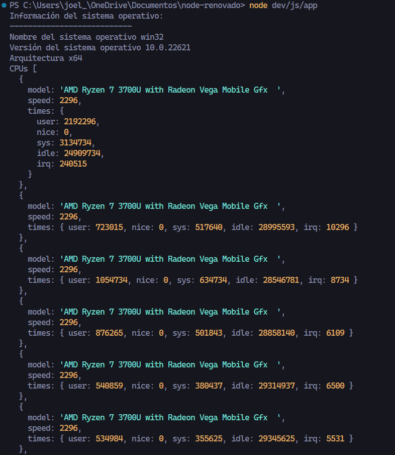
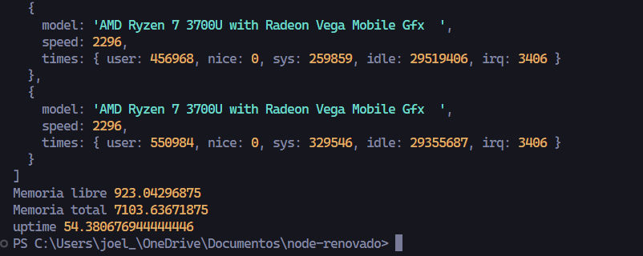
fs (File System)
Este módulo permite realizar operaciones como leer, escribir, actualizar, borrar y gestionar archivos y directorios en el sistema de archivos local.
Este módulos nor proporciona distintos métodos algunos síncronos y asíncronos.
statSync(path) Síncrono
Proporciona información sobre un archivo o directorio local de forma síncrona, y nos ofrece diferentes métodos.
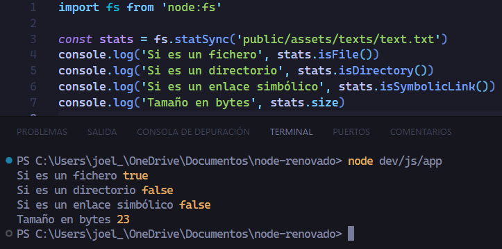
Lo más importante de fs es leer archivos ya que aquí, solo hemos obtenido información del archivo pero no lo hemos leído su contenido.
Lectura de archivos Síncrona readFileSync(path, ?options)
Se utiliza para leer el contenido de un archivo de forma síncrona. A diferencia de las operaciones asíncronas, como readFile, que requieren un callback, readFileSync bloquea el hilo principal hasta que la operación de lectura se completa, lo que significa que el código se ejecuta de manera sincrónica.
path (cadena): La ruta al archivo que se va a leer. Puede ser una ruta relativa o absoluta.
options (objeto o cadena, opcional): Especifica opciones adicionales para la operación de lectura. Puede ser un objeto que contenga opciones, como { encoding: 'utf8', flag: 'r' }, donde encoding indica la codificación del archivo y flag indica el modo de apertura del archivo. También puede ser una cadena que representa la codificación.
encoding (cadena, opcional): La codificación del archivo. Si se proporciona, el contenido del archivo se interpreta con esta codificación. Los valores comunes son 'utf8', 'ascii', o 'binary'. Si no se proporciona, se devuelve un búfer (Buffer) en lugar de una cadena.
flag (cadena, opcional): El modo de apertura del archivo. Puede ser 'r' (lectura), 'w' (escritura), etc. Por defecto es 'r' (lectura).
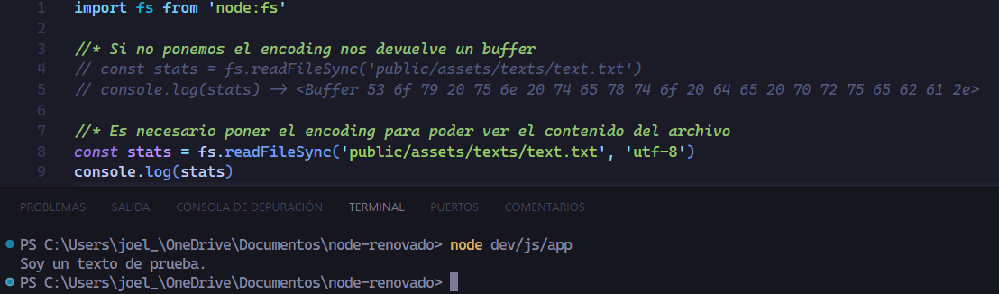
Como ya vimos en la teoría esto funciona de forma síncrona por lo que bloquea el hilo principal, veamos algo más complejo.
Como podemos ver esto funciona síncronicamente, pero en realidad esto no es bueno ya que deberiamos hacerlo de forma asíncrona, para que no bloquiemos el hilo.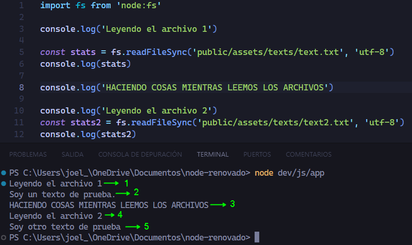
La forma en la que realidad deberiamos trabajar es poder hacer otras cosas mientras se leen otras, si no nuestras apps serian muy lentas, debemos procurar el siguiente resultado.
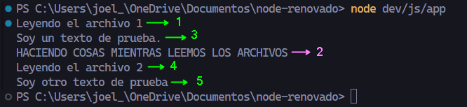
Hay que tener en cuenta que, en general, se recomienda evitar el uso de funciones síncronas en entornos Node.js, especialmente en operaciones de entrada/salida (I/O) que pueden bloquear el hilo principal de la aplicación. Sin embargo, en algunos casos, como scripts de inicio o configuración, el uso de funciones síncronas puede ser aceptable. En aplicaciones más grandes y orientadas a la producción, se favorece el uso de las funciones asíncronas para mantener la capacidad de respuesta del programa.
Lectura de archivos Asíncrona Con Callbacks readFile(path, ?options, callback)
Lee el contenido de un archivo asíncronamente. Podemos especificar opciones de codificación para obtener el contenido en un formato de texto.
path (cadena): La ruta al archivo que se va a leer. Puede ser una ruta relativa o absoluta.
options (objeto o cadena, opcional): Especifica opciones adicionales para la operación de lectura. Puede ser un objeto que contenga opciones, como { encoding: 'utf8', flag: 'r' }, donde encoding indica la codificación del archivo y flag indica el modo de apertura del archivo. También puede ser una cadena que representa la codificación.
encoding (cadena, opcional): La codificación del archivo. Si se proporciona, el contenido del archivo se interpreta con esta codificación. Los valores comunes son 'utf8', 'ascii', o 'binary'. Si no se proporciona, se devuelve un búfer (Buffer) en lugar de una cadena.
flag (cadena, opcional): El modo de apertura del archivo. Puede ser 'r' (lectura), 'w' (escritura), etc. Por defecto es 'r' (lectura).
callback (función): Una función de retorno de llamada que se ejecutará cuando la operación de lectura se complete. La función toma dos argumentos: err para cualquier error que haya ocurrido durante la lectura y data que contiene el contenido del archivo leído.
Como estamos utilizando callbacks no es necesario guardarlo en una constante.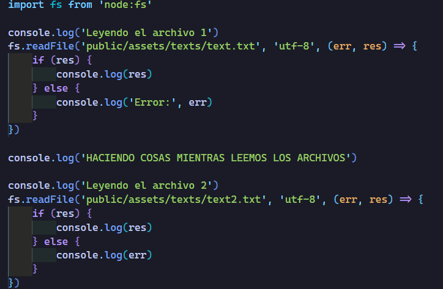
Como podemos ver, ya no estamos bloqueando el hilo principal, el mensaje que dice HACIENDO COSAS MIENTRAS LEEMOS LOS ARCHIVOS, se está ejecutando primero y una vez que están listos los archivos ya se muestra el resultado.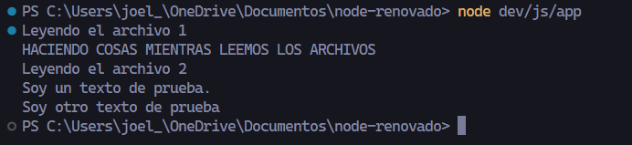
Lectura de archivos Asíncrona Con Promesas readFile(path, ?options)
Para poder utilizar promesas con algun módulo interno o nativo de Node.js lo que necesitamos es agregar lo siguiente /promises a la importación del modulo
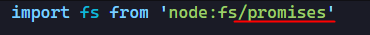
No todos los módulos internos permiten promesas, hay que revisar la documentación para saber que módulos nativos se pueden promisifcar. Para cuando tenemos un módulo que no permite promesas hay una manera de poder lograrlo pero lo veremos adelante en esta misma sección.
Sabiendo esto, ya podemos utilizar promesas con nuestra lectura de archivos.
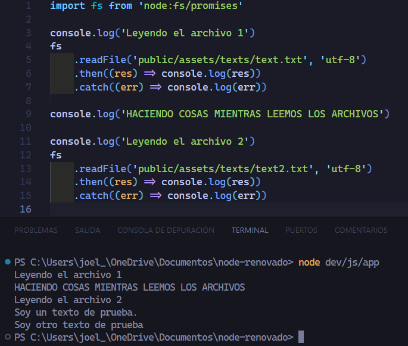
Obligar promificación de módulos nátivos que no permiten promesas
Como ya comentamos anteriormente no todos los módulos nativos permiten usar promesas, pero hay una forma de lograrlo para aquellos que no permiten las promesas.
Necesitamos importar otro módulo nativo llamado util y obtenemos un método que nos proprociona llamado promisify.
El módulo nativo util en Node.js proporciona varias funciones de utilidad, y una de las funciones más destacadas es promisify. Esta función promisify se utiliza para convertir funciones basadas en callbacks (devolución de llamada) en funciones que devuelven promesas. Esto es especialmente útil cuando trabajamos con código asincrónico y preferimos utilizar promesas y async/await en lugar de callbacks.
promisify(function)
function: La función que se desea convertir para que devuelva una promesa.
La función promisify toma una función que utiliza un estilo de devolución de llamada (callback), donde el último argumento es una función que se llama una vez que la operación asincrónica está completa. Convierte esta función en una que devuelva una promesa.
Ahora lo que haremos es promisificar una función de un módulo que no permite las promesas y que funciona con callbacks, pero haremos una simulación e imaginemos que readFile no permitiera promesas aunque sabemos que si.
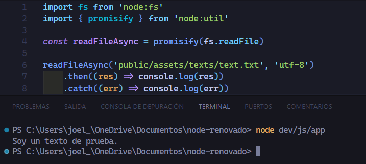
Lectura de archivos async-await readFile(path, ?options)
Primero empezaremos hacer una aclaración y es que en el sistema de módulos CJS no es posible utilizar el top-level-await.
Como podemos ver nos dice que solo podemos utilizar await dentro de una función async.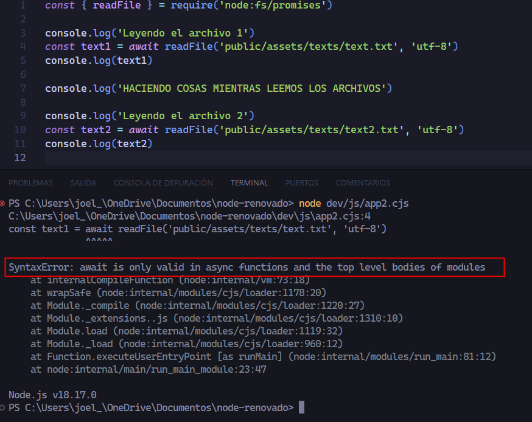
Si ejecutamos el mismo código con el sistema de módulos ESM no obtenemos ese error, ya que el top-level-await es compatible con ESM.
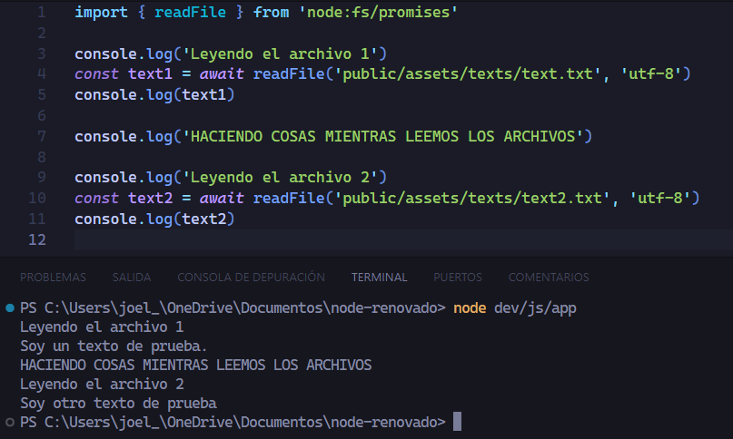
Ya sabemos que async-await permite que el código se comporte como si fuera síncrono pero no bloquea el hilo principal, ya que lo que hacemos con async-await en realidad se le conoce como código asíncrono secuencial.
Tenemos que saber las siguientes diferencias entre:
Código síncrono
Código Asíncrono
Código Asíncrono secuencial
Código Asíncrono paralelo
Para poder utilizar async-await dentro del sistema de módulos CJS, es comunmente utilizar una IIFE (Inmediatly Invoked Function Expression)
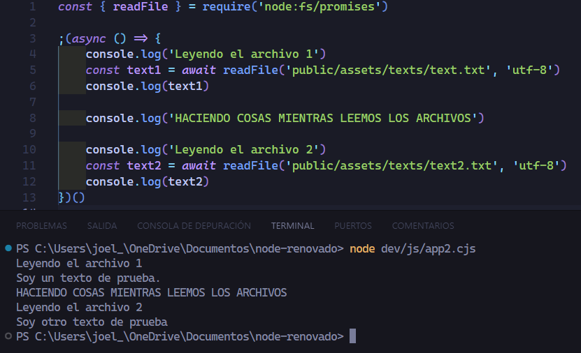
Código asíncrono en paralelo
Ocuparemos el método Promise.all([]) que ya sabemos que recibe un array de promesas y las resuelve en paraleleo y devuelve un array con los resultados en el orden del array de promesas,y este resultado está listo hasta que todas las promesas esten listas.
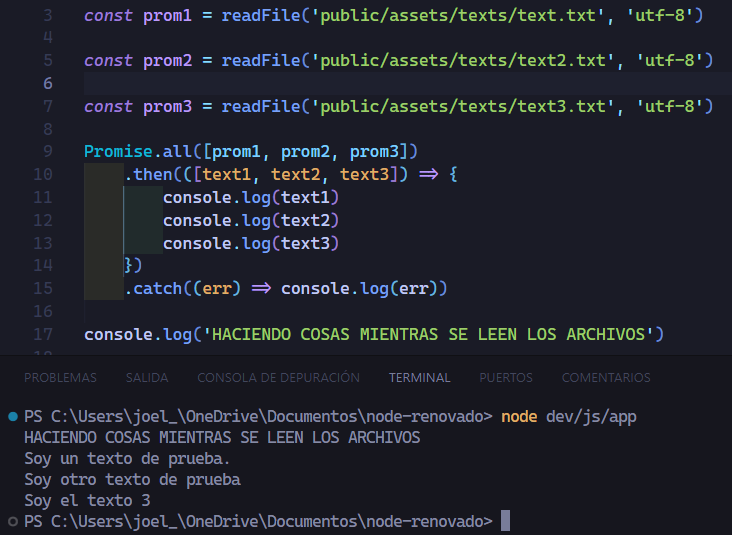
Leer el contenido de un directorio readdir(path, callback) parte 1
Pertenece al módulo fs (sistema de archivos) y se utiliza para leer el contenido de un directorio. Este método toma dos parámetros: la ruta del directorio que se va a leer y una función de devolución de llamada (callback).
path: Es la ruta del directorio que se va a leer. Puede ser una ruta relativa o absoluta al sistema de archivos.
callback: Es una función de devolución de llamada que se ejecutará una vez que la lectura del directorio haya sido completada. La función de devolución de llamada toma dos parámetros: un posible error (err) y un array de nombres de archivos en el directorio (files).
Lo que haremos es crear nuestro propio ls
Primero vemos que el segundo parámetro del callback llamado files es un array con el nombre de los archivos en el directorio del path que pasamos como parámetro.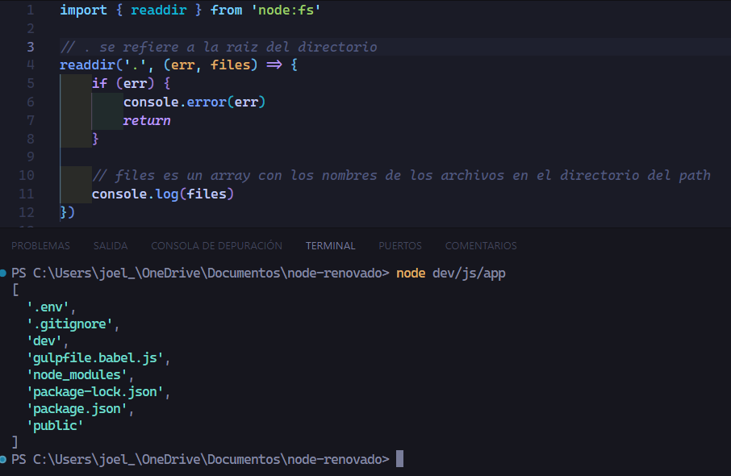
Ahora recorreremos el array de files y lo mostraremos en consola
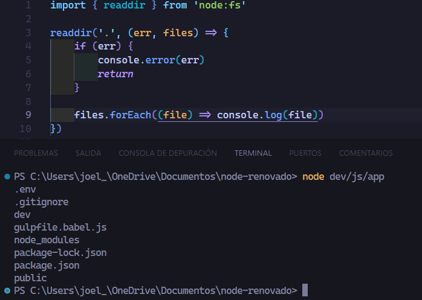
Nuestro código también lo podemos promisificar para poder usar el then y el catch.
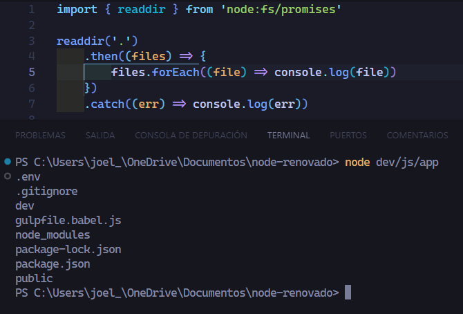
Hasta ahora nuestro ls se queda corto ya que siempre estamos buscando en el directorio (.) y lo que queremos es saber los nombres de cualquier archivo de un directorio en específico.
Para lograrlo necesitaremos utilizar el objeto proces.argv que ya vimos en la sección de global vs window . El cual nos devuelve un array con los argumentos de la lista de comandos.
En este ejemplo ejecutamos el directorio raiz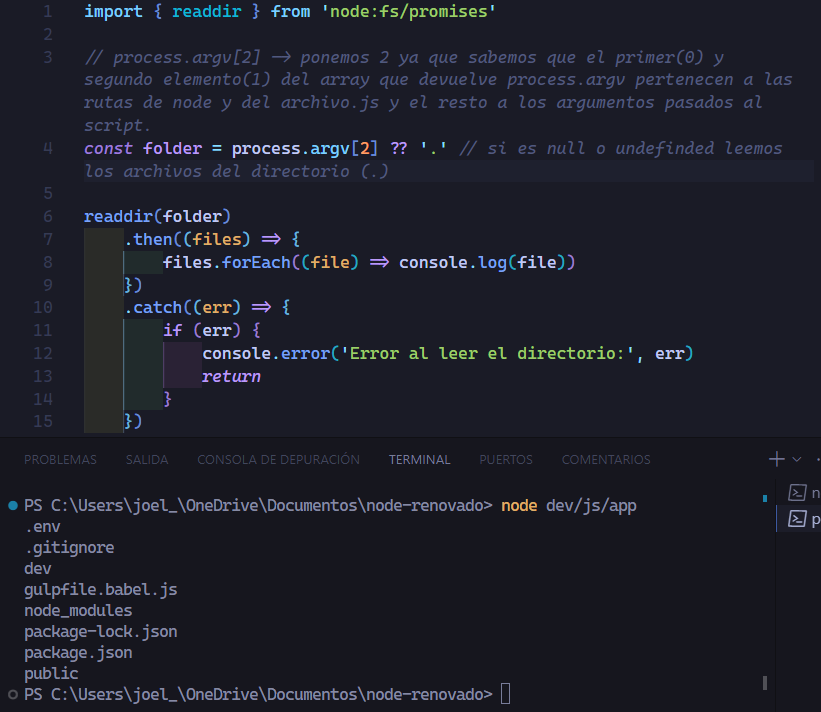
En este caso estamos agregando otro argumento en la lista de comandos que hace referencia a otro directorio, y así poder leer los archivos que hay dentro de ese directorio.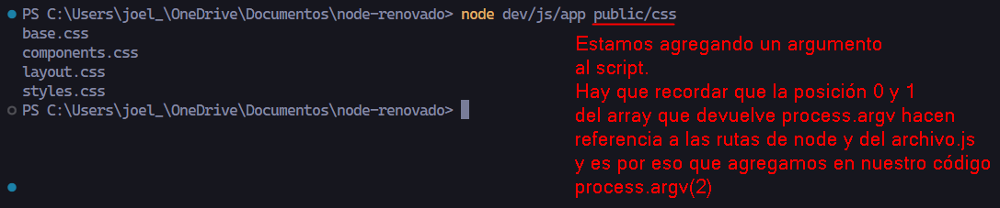
path
Proporciona utilidades para trabajar con rutas de archivos y directorios.
Cuando nosotros trabajamos con rutas.
Aquí tenemos una descripción de algunos de sus métodos y propiedades más comunes junto con casos de uso:
path.join(...paths)
Une segmentos de ruta en una única cadena de ruta. También se encarga de manejar de manera cruzada la separación de directorios en sistemas operativos diferentes.
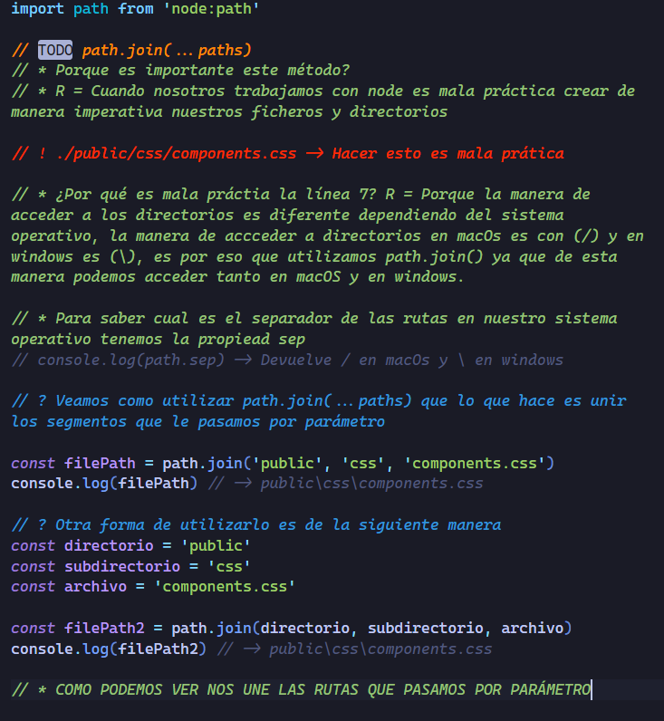
path.resolve(...paths)
Se utiliza para convertir rutas relativas en rutas absolutas. Acepta varios argumentos, que son tratados como segmentos de ruta, y los resuelve en una única ruta absoluta.
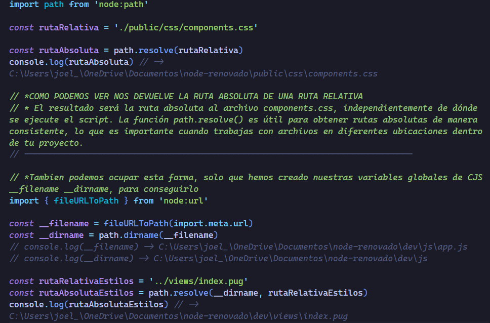
path.dirname(path)
Devuelve el directorio de una ruta.
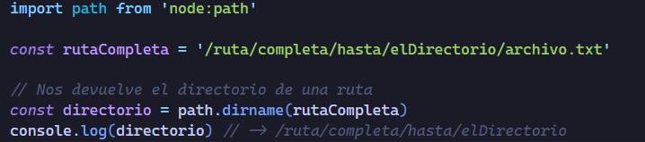
path.basename(path, ?ext)
Devuelve el nombre del archivo de una ruta. El segundo argumento opcional ext permite especificar una extensión para excluir.
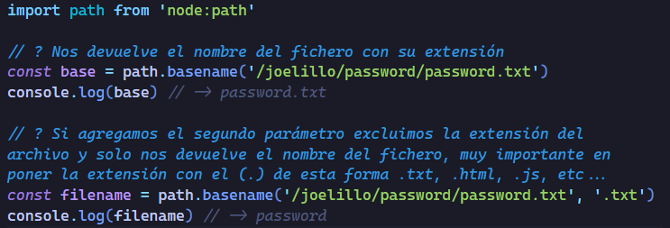
path.extname(path)
Devuelve la extensión de un nombre de archivo en una ruta.
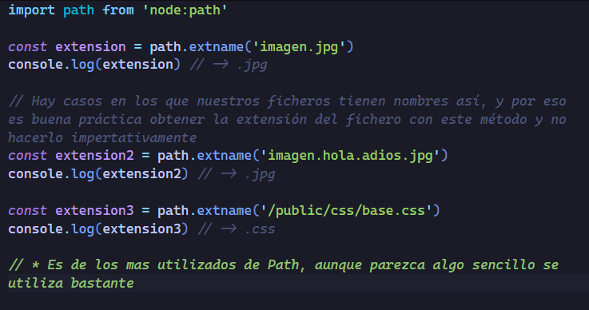
Leer el contenido de un directorio readdir(path, callback) parte 2
Continuaremos con nuestra aplicación de crear nuestro propio ls.
El módulo events proporciona una forma de trabajar con eventos. Los eventos son fundamentales para construir aplicaciones asincrónicas y manejar la comunicación entre diferentes partes de nuestro código. Aquí hay una explicación básica de cómo funciona el módulo events y cómo podemos crear y emitir eventos: